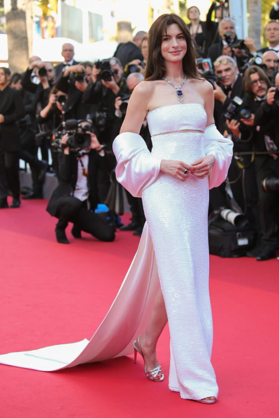
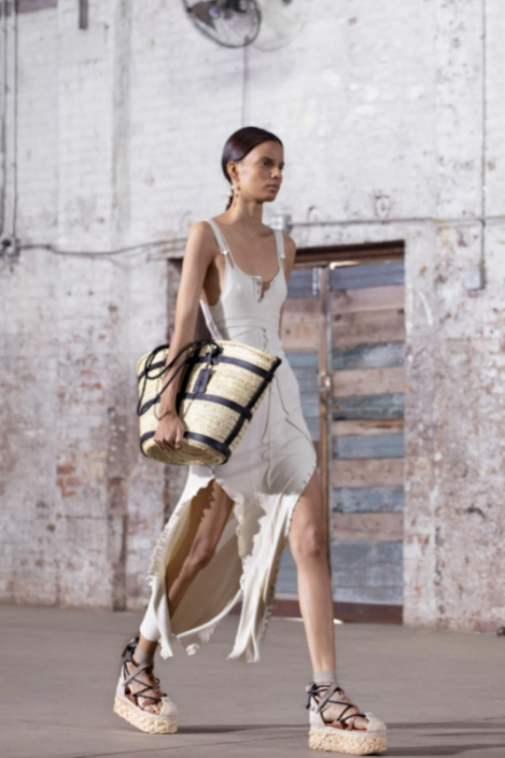

Moda
Haftanın Moda Instagram'ları: Havadar Keten.

2022 Cannes Film Festivali: Öne Çıkan Kırmızı Halı Görünümleri
17 Mayıs’ta başlayan ve 28’ine kadar sürecek olan 75.Cannes Film Festivali’nde Anne Hathaway'den Julia Roberts'a yıldızların iddialı kırmızı halı görünümlerini bir araya getiriyoruz..

2022 İlkbahar/Yaz Sezonunda Öne Çıkan 4 Ayakkabı Trendi
Sıcak havalar parça seçimi konusunda bizlere daha geniş bir seçki sunabiliyor. Ayakkabılar da bu noktada çeşitlenirken, moda dünyasının radarına takılan trendleri inceliyoruz.